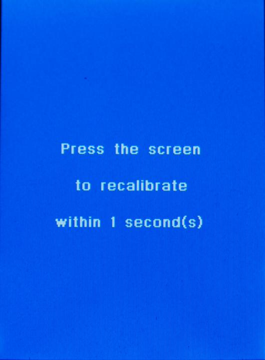

| Quick Start Tutorial |
|
If the Hand controller screen is flipped, I.E. the cord is
coming out the top, you MUST NOT DO A SCREEN CALIBRATION. All screen calibrations must be done in non-flipped modes. (cord coming out the
bottom of the Hand Controller.)  |
Touch anywhere close to the center of this screen within one second to
start the screen alignment routine. Touch it now, with the mouse cursor to go to the next screen. NOTE: If you missed it, you can safely unplug the hand controller and plug it back in to start over. I find this easiest at the hand controller itself. The reason for this alignment is that there are hidden switches at the bottom of the screen, that can change the language without having to go through the menus. This is so that pictures of each screen could be taken for tutorials with the cover removed. The other thing is that there is a gasket all the way around the LCD. If it gets to tight on the bottom, it could also be pressing on these switches. If aligning the screen does not fix it, you might want to back off the screws that hold the front cover on about a quarter of turn or so. Also the original gaskets was pretty hard. Losmandy has since come out with softer ones. If you experience problems even after loosing the screws about 1/2 turn, you might want to contact Losmandy and see if they will send you a replacement gasket. |